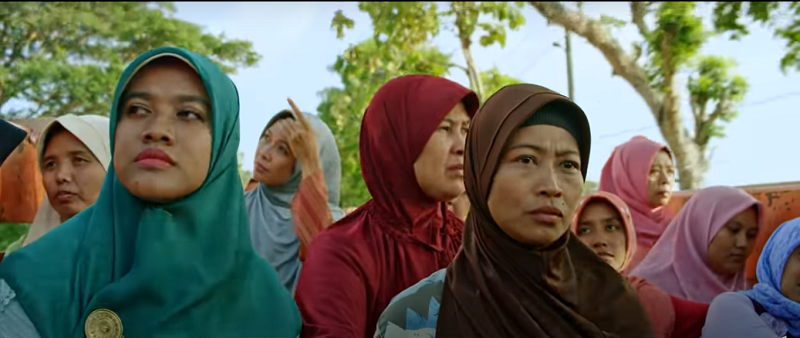
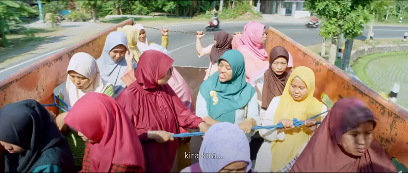
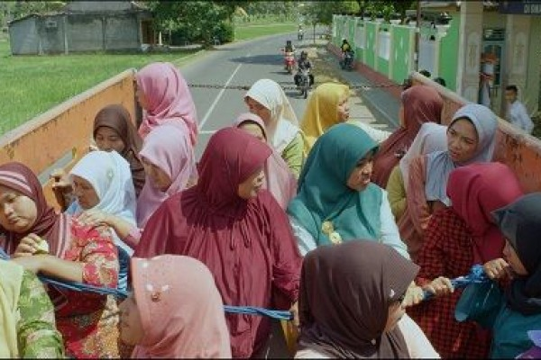

Pesan Moral Yang Dapat Diambil Dari Filim Tilik
1. Tradisi masyarakat desa yang saling peduli saat seseorang sakit atau tertimpa musibah
2. Jangan mudah menghakimi kesalahan orang lain sekalipun kita benar
3. Saat berpendapat harus bisa menerima jika kenyataannya terbukti benar atau salah
4.Jangan percaya seutuhnya informasi yang ada di dunia maya, cek kebenarannya
5. Dalam setiap rencana kita harus jadi pribadi solutif ketika terjadi dinamika


